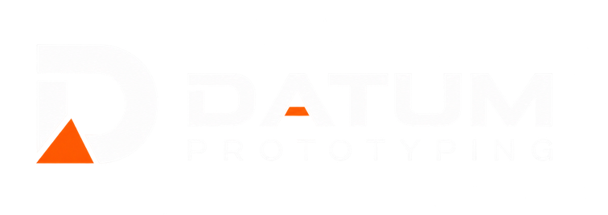
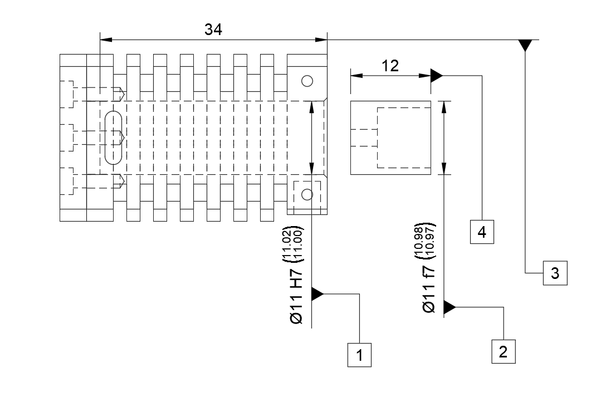

First Article InspectionFAI-01-FLAMEREV A · SIDE 1 / 1
Førsteemnekontrol · Flame Eater
Cylinder & stempel
Måleresultater dokumenteret mod det angivne fremstillingsgrundlag for Flame Eater-projektet.
Samlet resultatGodkendt
Dokument-IDFAI-01-FLAME
RevisionA
Udstedt06.10.2026
StatusGodkendt
MaterialeMessing Ms58 / EN AW-6082
Inspektionsdato06.04.2026
Kontrolleret afGlen Cilinder-Hansen
KontrolniveauFAI · hovedmål
Tegningsreference
Kontrolpunkter markeret på fremstillingsgrundlaget
Måleresultater
4 kontrollerede karakteristika| Nr. | Karakteristik / feature | Nominel | Tolerance | Målt | Status |
|---|---|---|---|---|---|
| 1 | Cylinder inder-Ø | 11.000 mm | +0.018 / 0.000 (H7) | 11.005 mm | PASS |
| 2 | Stempel yder-Ø | 11.000 mm | -0.016 / -0.034 (f7) | 10.975 mm | PASS |
| 3 | Cylinder inderlængde | 34.000 mm | ±0.100 | 34.005 mm | PASS |
| 4 | Stempel længde | 12.000 mm | ±0.100 | 11.950 mm | PASS |
Bemærkninger
Kritisk spillerum på 0,030 mm mellem cylinder og stempel er verificeret. De registrerede mål ligger inden for de angivne tolerancer.
KontrolstatusGlen Cilinder-HansenDatum PrototypingGodkendt · 06.04.2026